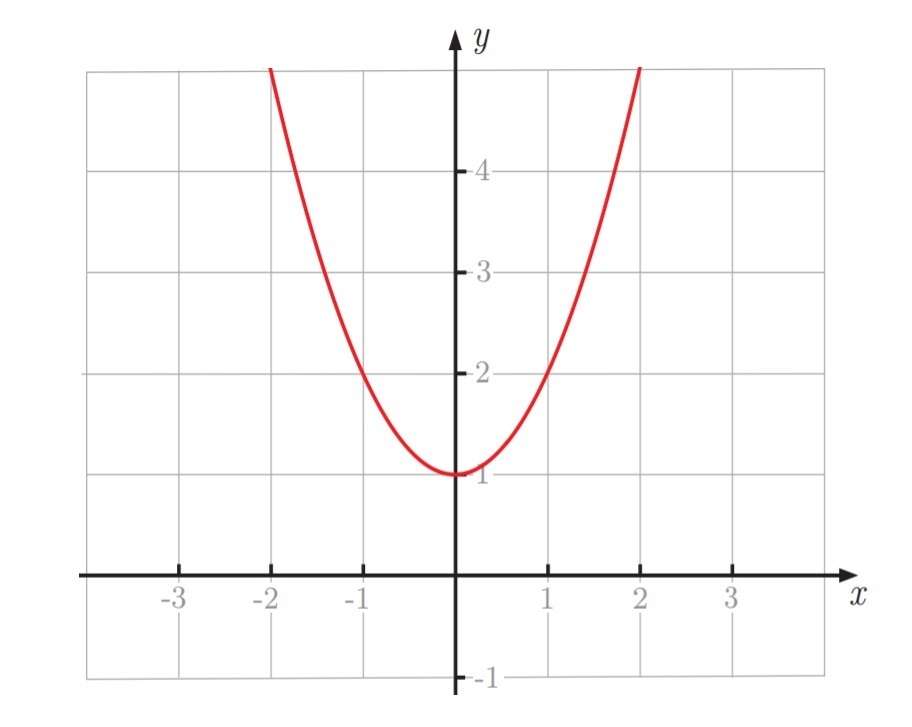
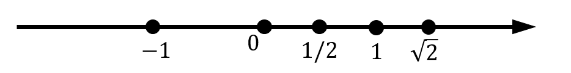
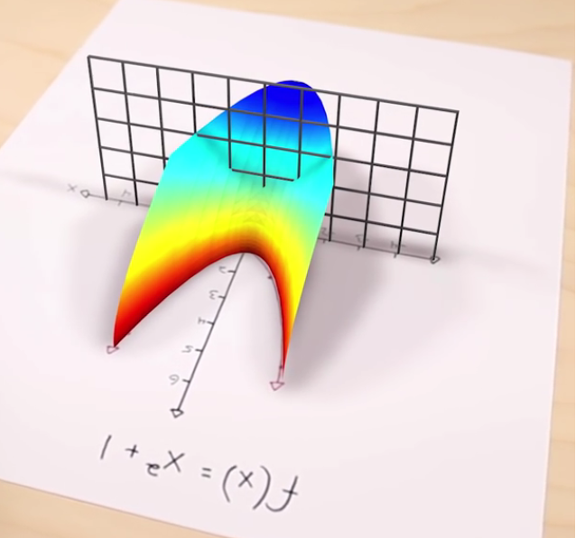
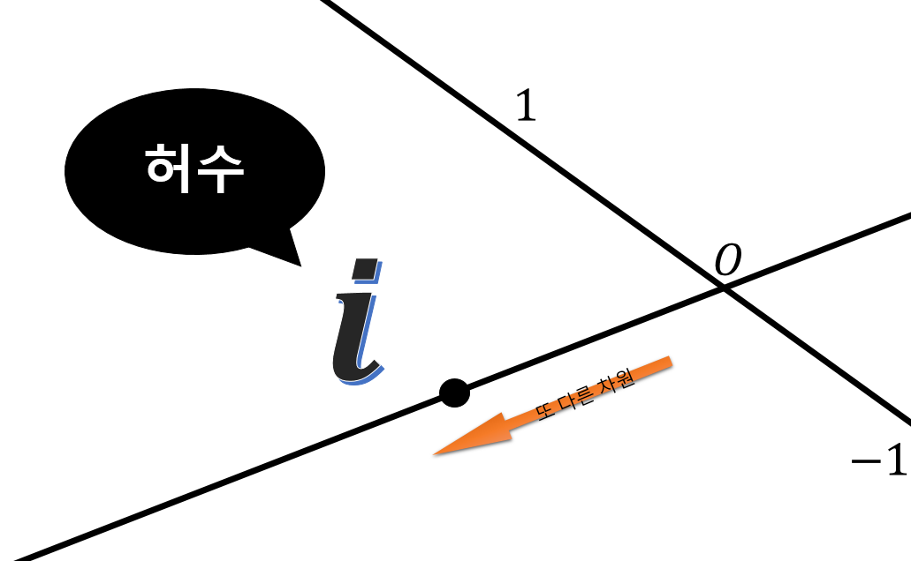
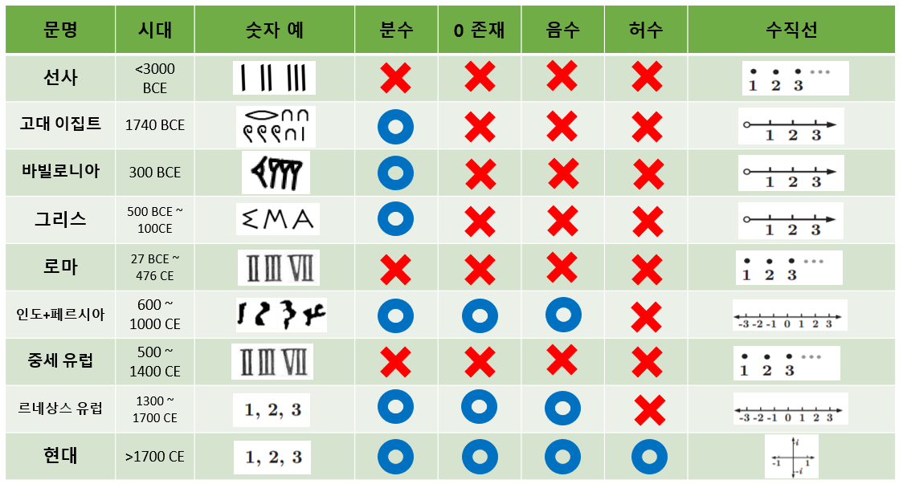

|
미분귀신 Math TV
|
|
| Home | Math Talks | Problems | Data | Profile |
허수는 존재한다! - 1 : 도입
글 목록으로 돌아가기
이 내용에 대한 비디오는 제작이 되었습니다.

한 번 \(f(x)=x^2+1\) 이라는 함수를 고려해 봅시다.
이 함수의 그래프를 그려보면, 오른쪽과 같은 친숙한 포물선을 얻을 수 있습니다.
이제 만약에 이 식이 언제 \(0\) 이 되는지 찾아내고 싶다고 합니다. 즉, 이 방정식의 해를 구하겠다는 것이죠. 우리가 그려낸 그래프에 의하면, 구하는 해는 방정식의 그래프가 \(x\)축과 만나는 점일 것입니다.
그림에서 볼 수 있듯이 \(f(x)\)는 \(x\)축을 지나지 않습니다. 따라서, 그래프에 의하면 방정식 \(x^2+1=0\) 의 해는 없습니다.
그런데 여기에는 문제가 있습니다. 약 \(200\)년 전 쯤, 수학자 가우스(Gauss)는
"모든 \(n\)차 다항 방정식에는 근이 \(n\)개 존재한다." [대수학의 기본정리(Fundamental Theorem of Algebra)]
는 사실을 증명했습니다. \(f(x)\)는 \(2\)차 식이므로, 근이 \(2\)개가 존재 해야만 합니다.
그렇다면 우리가 그린 포물선은 수학적으로 '기본정리'라고 불릴만한 내용과 불일치 하므로 문제가 있는듯 합니다. 가우스는 우리에게 \(f(x)\)를 \(0\)으로 만들어 주는 \(x\)의 값이 \(2\)개 존재한다는 말을 해주고 있는데, 그래프에서는 도저히 찾을 수가 없습니다. 어디로 사라진 걸까요?
문제가 생긴 이유를 간단히 얘기하자면 우리가 가진 숫자로는 충분하지 않기 때문입니다. 우리는 일반적으로 숫자를 \(1\)차원의 연속적인 형태로 존재하는 것 처럼 인식합니다. 가장 대표적인 것이 바로 수직선입니다.

수직선에는 우리가 잘 알고있는 숫자들이 살고 있습니다. \(0\), \(1\), 음수, 유리수 들이 있지요. 심지어 \(\sqrt{2}\)와 같은 무리수도 수직선에 있습니다.
하지만 수직선은 완벽하지 않습니다. 그리고 그 "사라진" 숫자들은 왼쪽 오른쪽으로 더 가야 있는 것이 아니라, 완전히 새로운 차원에 살고있습니다. 대수학적으로, 이 새로운 차원은 약 \(2000\)년간 불가능하다고 여겨졌던 수학 문제와 관련이 있습니다. 바로 \(-1\)의 제곱근입니다.

이제 그 새로운 차원을 우리의 분석에 포함시킨다면, 우리가 그렸던 \(f(x)=x^2+1\)의 그래프는 오른쪽과 같은 모양으로 변하게 됩니다.
굳이 말하지 않더라도 훨씬 흥미로워 보입니다.
이제 숫자의 고려 대상이 \(2\)차원이 되었으니, \(f(x)=x^2+1\)이 실제로 어떤 형태를 띄는지 보겠습니다. 그리고 자세히 보니 실제로 \(x\)축을 지나고 있다는 사실을 확인할 수 있습니다! 위에서 우리가 "해가 없다"고 할 때에는 우리가 단지 잘못된 차원에서 바라보고 있었다는 겁니다!
그런데, 왜 이 새로운 차원이 일반적인 상식이 아닌 걸까요? 이유 중 하나는 잘못된 이름이 붙여졌기 때문입니다. 가우스는 다음과 같은 말을 남기기도 했습니다.
"허수(Imaginary Numbers)라는 주제가 지금까지 잘 알려지지 않은 주요 이유는 잘못된 이름 때문이다. 만약 예를 들어, \(+1\), \(-1\), \(-1\)의 제곱근이 양, 음, 허수 단위 대신 direct(직), inverse(역), lateral(옆) unit(단위)라는 이름이었다면, 이렇게 잘 알려지지 않았을 이유가 없다."

\(f(x)\)의 그래프를 확장한 것을 더욱 잘 이해하기 위해, '수'에 대해 좀 얘기하는 시간을 가져 봅시다.

아주 옛날 사람들은 자연수: \(1, 2, 3 \cdots\)로 충분했습니다. 그들에게 숫자는 셈(counting)의 도구였기 때문입니다. 그들에게 수직선은 점들의 나열이었을 것입니다.
문명이 발달하면서, 인류는 더욱 복잡한 문제들에 대한 답이 필요했습니다. (땅을 어떻게 나눌지, 경제적 교류들을 어떻게 기록할지 등) 자연수로는 충분하지 못했기 때문에 이집트 사람들은 분수를 도입하게 됩니다. 분수를 활용한 이후로 한동안은 문제가 없었습니다.
그 다음에는 \(0\)과 음수가 등장하게 됩니다. 하지만 이 숫자들에 대한 개념을 사람들에게 이해시키는 데에는 굉장히(!!) 오랜 시간이 걸렸습니다. 이 숫자들이 물리적으로 무엇을 의미하고, 또 실생활에 어떻게 적용 되는지 굉장히 애매모호했기 때문에, \(0\)과 음수는 사람들의 많은 의심을 받으며 피해야 할 대상으로 취급받거나 무시당했습니다. 심지어 수학자들도 \(a-b=c\)와 같은 식이 있다면 \(-\)가 등장하는 것을 피하기 위해 일부러 이항시켜 \(a=b+c\)로 적기도 했었습니다.
시간이 흐르고 결국에는 \(0\)과 음수는 받아들여졌습니다. 여러가지 이유가 있겠지만, 음수의 경우는 빚과 같은 개념을 표현하는데 편했기 때문이죠. 가장 큰 이유는 음수들이 자꾸 수학에서 등장했기 때문입니다.
음수들이 없다면 수학에 있어서 엄청난 제약이 따르게 됩니다. 음수 없이는 무척 간단한 대수 문제인 \(x+3=2\) 조차도 해가 없게됩니다. 음수가 받아들여지기 전에는 이 문제 또한 답이 없었습니다. 마치 위에서 \(f(x)=0\)의 해가 없다고 했던 것처럼 말이죠.
그렇다고 이 문제들에 답이 없다고 생각하는 것 또한 그렇게 이상해 보이지 않습니다. \(x+3=2\)를 푼다고 생각해 봅시다. 양변에서 \(3\)을 빼 주면 \(x=2-3\)을 얻게됩니다. 이를 말로 풀어서 쓰면, "어떤 물건 \(2\)개가 있는데 여기서 물건 \(3\)개를 가져가면 몇 개가 남는가?" 와 같은 질문이 됩니다.
이렇게 보면 음수와 \(0\)이 오랫동안 받아들여지지 못한 것이 이해는 됩니다. 위의 문장은 "상식적으로는" 말이 안되기 때문이죠. 어떻게 \(2\)개에서 \(3\)개를 가져가겠어요?
심지어 \(18\)세기에는 수학자 오일러 조차도 음수에 대해 완벽히 이해하지는 못해 \(-1>\infty\) 와 같은 식을 적은 적도 있습니다.
이러한 점으로 볼 때, 우리는 다음과 같은 질문들을 할 수 있을 것입니다.
• 왜 우리는 학생들에게 수천년 간 위대한 수학자들의 생각을 피해, 뒤늦게 발견된 숫자들을 이해하고 계산하는 방법을 알기를 원하는가?
• 실제 세계와 별로 연관성이 없어 보이는데도
왜 우리는 음수와 허수를 받아들였는가?
• 추가적으로 발견된 이 숫자들이 \(f(x)=x^2+1\)의 해를 구하는데 어떤 도움이 되는가?
위 질문들에 대한 답들은 다음 글에서 복소수의 발견으로 돌아가면서 답해보도록 하겠습니다.